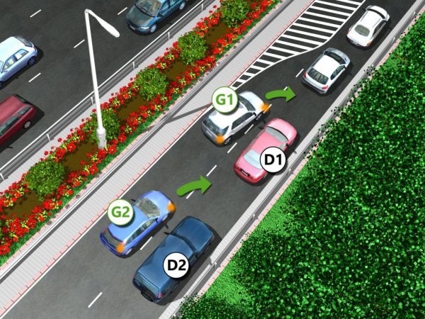
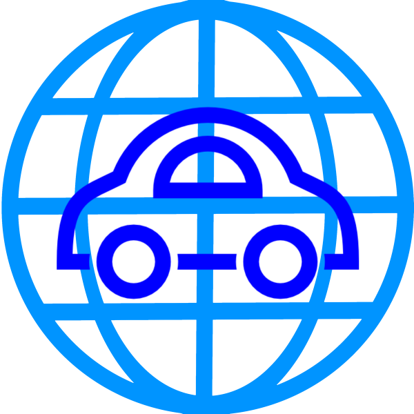
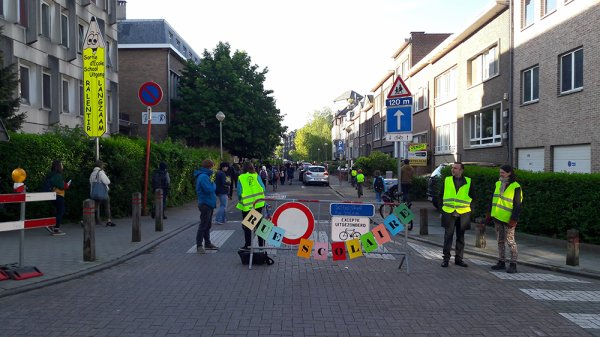
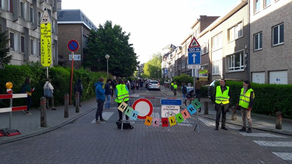

![[ANA JDG] Asterix and the Great Rescue - Megadrive](../vi/6oUXi0ckLmA/default.jpg)
![[ Présentation pour la chaîne Grenier des Joueurs ] JDG Prod](../art/SHAR.6419.583.2.jpg)


Lorsque vous voyez un panneau de zone ou juste un panneau à cercle rouge avec un nombre dedans, sachez qu'il vous donne beaucoup plus d'information que la limite à ne pas franchir en KM/H !
En effet, vous pouvez connaître:
La distance de sécurité à maintenir entre le véhicule qui vous précède
( VitesseMaximum/2 ) mètres
La distance parcourue durant le temps de réaction
( DizaineVitesseMaximum*DizaineVitesseMaximum ) mètres
La distance de freinage sur sol mouillé
( DizaineVitesseMaximum*DizaineVitesseMaximum ) mètres
La distance de freinage sur sol sec
(( DizaineVitesseMaximum*DizaineVitesseMaximum )/2 ) mètres
La distance totale d'arrêt sur sol sec
(( DizaineVitesseMaximum*DizaineVitesseMaximum )+(( DizaineVitesseMaximum*DizaineVitesseMaximum )/2 )) mètres
PAR EXEMPLE (pour être plus clair) dans une zone 30:
La distance de sécurité à maintenir entre le véhicule qui vous précède
( 30/2 )= 15 mètres
La distance parcourue durant le temps de réaction
( 3*3 )= 9 mètres
La distance de freinage sur sol mouillé
( 3*3 )= 9 mètres
La distance de freinage sur sol sec
(( 3*3 )/2 )=4.5 mais on arrondit en 5 mètres
La distance totale d'arrêt sur sol sec
(( 3*3 )+(( 3*3 )/2 )) = (9 + 5) = 14 mètres
KidpaddleetcieGlin
Description :
Le Blog d'une personne aillant découvert internet en 2007 qui partage une partie de sa vie mais surtout ses réflexions, ses découvertes et ses cours!
Bon, je ne vous garantit pas que 100% du contenu est fiable mais aux moins je l'approuve! :)
N'oubliez pas de me retrouver sur les autres sites internet du réseaux KidpaddleetcieGlin retrouvable dans le premier article de chaque page. ^-^
Bon, je ne vous garantit pas que 100% du contenu est fiable mais aux moins je l'approuve! :)
N'oubliez pas de me retrouver sur les autres sites internet du réseaux KidpaddleetcieGlin retrouvable dans le premier article de chaque page. ^-^
Je bosse actuellement pour la chaîne Grenier des Joueurs
Son morceau préféré
Retour au blog de KidpaddleetcieGlin
Pour mieux vous préparer à l'acquisition du permis B, je vous propose de prendre conscience de quelques règles qui paraissent peut-être évidente mais face à 50 questions, on ne peut pas vraiment se permettre le luxe d'hésiter ou réfléchir à son aise !
1) Le clignoteur à chaque fois que vous tournez sauf si c'est un tournant suivant une route (un virage)
2) Toujours utiliser les clignoteurs quand vous dépasser un autre véhicule, quelques soit le véhicule
3) On ne dépasse pas à gauche si on ne peut pas voir ce qui se passe à gauche
4) Les signaux bleus parlent d'obligation et les signaux rouges d'interdiction
5) On doit couper le moteur quand on est à l'arrêt ou en stationnement
6) Un changement de direction vous fait perdre toute priorité, laisser passer tout les véhicules devant vous
7) Toute man½uvre fait perdre la priorité, vous devez attendre que la place soit disponible pour l'effectuer
8) Le klaxon est autorisé qu'en dehors des agglomérations
9) On peut tripler des motos s'il y a la place pour le faire
10) La priorité de droite fonctionne aussi avec les cyclistes,les cavaliers,...
11) Si vous prenez la fuite après avoir volontairement foncer sur votre ex' avec votre voiture et qu'on l'apprend, vous n'avez pas fait un délit de fuite mais un assassinat/meurtre
12) Il faut une dérogation délivrée par le Ministère de la Mobilité pour être en droit de ne pas mettre sa ceinture de sécurité
13) La reproduction retro-réfléchissante de votre plaque d'immatriculation se met en avant du véhicule
14) Comme le niveau d'huile se vérifie à froid sur sol plate, il faut le vérifier AVANT le départ du véhicule
15) On peut le plus souvent s'arrêter mais pas stationner.
1) Le clignoteur à chaque fois que vous tournez sauf si c'est un tournant suivant une route (un virage)
2) Toujours utiliser les clignoteurs quand vous dépasser un autre véhicule, quelques soit le véhicule
3) On ne dépasse pas à gauche si on ne peut pas voir ce qui se passe à gauche
4) Les signaux bleus parlent d'obligation et les signaux rouges d'interdiction
5) On doit couper le moteur quand on est à l'arrêt ou en stationnement
6) Un changement de direction vous fait perdre toute priorité, laisser passer tout les véhicules devant vous
7) Toute man½uvre fait perdre la priorité, vous devez attendre que la place soit disponible pour l'effectuer
8) Le klaxon est autorisé qu'en dehors des agglomérations
9) On peut tripler des motos s'il y a la place pour le faire
10) La priorité de droite fonctionne aussi avec les cyclistes,les cavaliers,...
11) Si vous prenez la fuite après avoir volontairement foncer sur votre ex' avec votre voiture et qu'on l'apprend, vous n'avez pas fait un délit de fuite mais un assassinat/meurtre
12) Il faut une dérogation délivrée par le Ministère de la Mobilité pour être en droit de ne pas mettre sa ceinture de sécurité
13) La reproduction retro-réfléchissante de votre plaque d'immatriculation se met en avant du véhicule
14) Comme le niveau d'huile se vérifie à froid sur sol plate, il faut le vérifier AVANT le départ du véhicule
15) On peut le plus souvent s'arrêter mais pas stationner.

Quand on a un rétrécissement de bande, il faut bien trouver un ordre de passage sur la dernière existante... mais c'est pas pour autant que ce qu'on fait est une tirette !
Les conditions pour faire une tirette:
- Diminution du nombre de bandes de circulation à cause de travaux ou d'accidents,
- Cas de circulation dense,
- Obligation pour les conducteurs circulant sur la bande libre de céder le passage à ceux qui arrivent sur l'obstacle,
- Il n'y a donc aucun intérêt à changer de bande avant l'obstacle.
https://www.dhnet.be/actu/belgique/le-principe-de-la-tirette-une-fois-pour-toutes-voici-comment-ca-marche-5c76cc8a9978e2710e75633c
Quand on a un rétrécissement de bande, il faut bien trouver un ordre de passage sur la dernière existante... mais c'est pas pour autant que ce qu'on fait est une tirette !
Les conditions pour faire une tirette:
- Diminution du nombre de bandes de circulation à cause de travaux ou d'accidents,
- Cas de circulation dense,
- Obligation pour les conducteurs circulant sur la bande libre de céder le passage à ceux qui arrivent sur l'obstacle,
- Il n'y a donc aucun intérêt à changer de bande avant l'obstacle.
https://www.dhnet.be/actu/belgique/le-principe-de-la-tirette-une-fois-pour-toutes-voici-comment-ca-marche-5c76cc8a9978e2710e75633c
![[Aide PermisDeConduire]Les différentes pénalités !](../5252/79895252/pics/3330240980_1_3_xyBIrN6i.jpg)
Quand on est conducteur, il faut respecter des règles et si on ne respecte pas ces règles, on doit recevoir des pénalités !
Sachez que si vous passez votre véhicule à un tiers, si vous n'apporter pas une preuve que c'est lui en cas d'infraction de sa part, vous risquez de subir la pénalité à sa place !
1. L'alcool
Si vous êtes pris en train de rouler avec au moins 0,35 mg/l d'alcool dans le sang ou 0,8 g/l, le juge PEUT imposer l'EthyAD ( Éthylotest AntiDémarrage ).
Si vous êtes pris en train de rouler avec au moins 0,78 mg/l ou 1,8 g/l d'alcool dans le sang OU que vous avez déjà été pris comparu précédemment devant le juge précédemment (maximum 3 ans) et que vous récidiver avec minimum 0,50 mg/l ou 1,2 g/l d'alcool dans le sang, LE JUGE DOIT IMPOSER l'EthyAD.
(Plus d'info sur l'EthyAD: https://www.vias.be/fr/particuliers/ethylotest-antidemarrage/ )
2. Délit de fuite
Lors d'un délit de fuite, selon les dégâts causés, vous risquez soit une amende,soit une peine d'emprisonnement,soit les deux !
Si vous faîtes des dégâts matériels, vous devrez payer une amende de 200 à 2 000 ¤ et/ou faire une peine d'emprisonnement de 15 jours à 6 mois.
Si vous faîtes des coups et blessures pour autrui, vous devrez payer une amende de 400 à 5 000 ¤ et/ou faire une peine d'emprisonnement de 15 jours à 3 ans.
Si vous faîtes des la mort pour autrui, vous devrez payer une amende de 400 à 5 000 ¤ et/ou faire une peine d'emprisonnement de 15 jours à 4 ans.
3.Défaut de permis
Quand vous êtes pris sur la route et qu'on relève des problèmes pouvant mettre en danger les autres usagers de la route et/ou vous, vous risquez une peine d'emprisonnement de 8 jours à 2 ans, une amende de 1 600 euros à 16 000 euros et/ou une déchéance du droit de conduire de 8 jours à 5 ans avec prise de votre véhicule. Si on vous reprend dans les 3 ans qui suivent, on vous double la sanction.
4.Autres
Tout ce qui est de la gène autour de la conduite du véhicule,assurances,bienveillance,... risque de vous faire perdre le droit de rouler pendant 3 mois minimum, une amende ou encore une peine d'emprisonnement. Mais là, c'est au cas par cas pour connaître les chiffres !
Il y a 4 degré d'infractions ayant chacun son niveau de pénalité:
1) Tout ce qui est infraction mineur, qui ne fait de dégât directement(oublie d'un clignotant par exemple !)
Si la police le voit: 58¤
Si ça va jusqu'au parquet (Tribunal): 68¤
Si ça va jusqu'au tribunal de la police (Amende): de 80 à 2 000 ¤
2) Tout ce qui met en danger mais sans dégât directement
(stationner illégalement sur une place réservée aux personnes handicapées par exemple)
Si la police le voit: 116¤
Si ça va jusqu'au parquet (Tribunal): 126¤
Si ça va jusqu'au tribunal de la police (Amende): de 160 à 2 000 ¤
3) Tout ce qui met en danger avec risque de dégât direct
(dépasser sur un passage piéton par exemple)
Si la police le voit: 174¤
Si ça va jusqu'au parquet (Tribunal): 184¤
Si ça va jusqu'au tribunal de la police (Amende): de 240 à 4 000 ¤
4) Tout ce qui met en danger avec risque de dégât direct physique irrémédiable
(Dépasser par la gauche dans une côte ou un virage par exemple)
Peu importe qui vous voit, vous êtes obligé de perdre votre permis de conduire et payer entre 320 et 4 000¤.
Pour aller plus loin:
http://www.infractions-code-de-la-route.be/infractions-et-sanctions/amendes/
On peut calculer son amende ici : https://www.monamende.be/

Lorsqu'on veut étudier sérieusement le permis B, le mieux est de s'entraîner avec des simulations (gestion des priorités, des panneaux et 50 questions de l'examen).
Pour obtenir ces simulations, vous avez le choix entre https://www.permisdeconduire-online.be/theorie/theorie-permis-b (Intéressant pour les 50 questions de l'examen) et https://www.feuvert.be/ (intéressant pour les simulations avec les panneaux et les priorités ainsi que les 50 questions de l'examen avec un narrateur).
Malheureusement, ces sites sont payants pour obtenir les simulations:
PermisDeConduire-Online coûte 4 euros tout les 5 jours
tandis que FeuVert coûte 26.5¤ tout les mois.
Si on fait un rapide calcul en croix, on obtient 80 centimes d'euros/jours pour PermisDeConduire-Online tandis que FeuVert fait 88 centimes d'euros/jours... c'est raisonnable !
Donc, le moins cher sur le long terme est PermisDeConduire-Online mais le plus avancé (et le moins moche visuellement) est FeuVert ! À vous de voir quel formule vous plait le plus !
Sinon, pour un livre de bord vous pouvez aller sur: https://www.aibv.be/fr/brochures-et-documents
Pour un rendez-vous pédagogique en e-learning : https://www.rendezvouspedagogique.be/fr
Pour les rendez-vous d'examen et tarifs: http://goca.be/fr/
Lorsqu'on veut étudier sérieusement le permis B, le mieux est de s'entraîner avec des simulations (gestion des priorités, des panneaux et 50 questions de l'examen).
Pour obtenir ces simulations, vous avez le choix entre https://www.permisdeconduire-online.be/theorie/theorie-permis-b (Intéressant pour les 50 questions de l'examen) et https://www.feuvert.be/ (intéressant pour les simulations avec les panneaux et les priorités ainsi que les 50 questions de l'examen avec un narrateur).
Malheureusement, ces sites sont payants pour obtenir les simulations:
PermisDeConduire-Online coûte 4 euros tout les 5 jours
tandis que FeuVert coûte 26.5¤ tout les mois.
Si on fait un rapide calcul en croix, on obtient 80 centimes d'euros/jours pour PermisDeConduire-Online tandis que FeuVert fait 88 centimes d'euros/jours... c'est raisonnable !
Donc, le moins cher sur le long terme est PermisDeConduire-Online mais le plus avancé (et le moins moche visuellement) est FeuVert ! À vous de voir quel formule vous plait le plus !
Sinon, pour un livre de bord vous pouvez aller sur: https://www.aibv.be/fr/brochures-et-documents
Pour un rendez-vous pédagogique en e-learning : https://www.rendezvouspedagogique.be/fr
Pour les rendez-vous d'examen et tarifs: http://goca.be/fr/
Sur les routes belges, vous avez plusieurs vitesses maximales et elles sont liées à plusieurs zones, les voici dans cet article !
Le pas
- Après un panneau d'air de jeu
20 km/h
- Zone piétonne
- Zone résidentielle
25 km/h
-Remorquage
-Cyclo A
30 km/h
- Zone 30
- Dispositif sur-élevé
- Route réservée
- À l'approche d'une école
- Rue cyclable (rester derrière le vélo)
45 km/h
-Cyclo B
50 km/h
- Agglomération
60 km/h
- + de 7,5T hors agglomération
70 km/h ( région flamande )90 km/h ( région Wallone et Bruxelles-Capitales)
- Route ordinaire (route nationale, les fameux "N n°")
100 km/h
Autobus/Car sur l'autoroute
120 km/h
-Autoroutes
Source: https://www.permisdeconduire-online.be/theorie/theorie-permis-b/vitesse-maximale-autoroute-agglomeration-zone-rue-cyclable
Le pas
- Après un panneau d'air de jeu
20 km/h
- Zone piétonne
- Zone résidentielle
25 km/h
-Remorquage
-Cyclo A
30 km/h
- Zone 30
- Dispositif sur-élevé
- Route réservée
- À l'approche d'une école
- Rue cyclable (rester derrière le vélo)
45 km/h
-Cyclo B
50 km/h
- Agglomération
60 km/h
- + de 7,5T hors agglomération
70 km/h ( région flamande )90 km/h ( région Wallone et Bruxelles-Capitales)
- Route ordinaire (route nationale, les fameux "N n°")
100 km/h
Autobus/Car sur l'autoroute
120 km/h
-Autoroutes
Source: https://www.permisdeconduire-online.be/theorie/theorie-permis-b/vitesse-maximale-autoroute-agglomeration-zone-rue-cyclable
Des fois, sur le bord de la chaussée, vous trouverez des panneaux rouges accompagnés d'un panneau bleu en bas avec inscrit dessus "+ 3.5t ".
Ces panneaux sont relatifs à la MMA (Masse Maximale Autorisée) et la MEC (Masse En Charge).
La MMA donne comme information le type de votre véhicule selon l'indice "3,5 tonnes".
Une voiture normal (tout comme une camionnette, une mobylette,...) DOIT peser moins de 3.5t,
Un camion (tout comme une citerne, un bus,...) PEUT peser plus de 3.5t.
La MEC donne comme information, souvent à un camion, que si on pèse moins que 3,5 tonnes, on peut faire une certaine man½uvre non-autorisé dans le cas où les 3,5 tonnes sont dépassés.
Il existe plusieurs combinaisons avec le panneau bleu "+3.5t" et chacun à son rapport avec soit la MMA, soit la MEC:
MMA
- Panneau vitesse (cercle rouge avec un nombre dedans)
- Panneau relatif au fait de doubler (cercle rouge avec deux véhicules y figurant côte à côte)
- Panneau Parking (tout bleu avec un P blanc dedans)
- Interdiction de circulation dans la cruise (cercle rouge et une diagonal barrant "Cruise Control")
MEC
- Panneau 3.5t (cercle rouge avec "3.5t" dedans)
- Interdiction de tourner (cercle rouge avec une flèche désignant la gauche ou la droite)
- Interdiction de véhicule de transport (cercle rouge avec un camion noir de profil au milieu)
Pour mettre les choses au clair, les 3.5 tonnes, dans une voiture, sont assez difficile à atteindre. La voiture de base pèse dans les 1.5 tonnes donc il y a de la marge ( 2 tonnes ) pour dépasser la MMA !
Des exemples et des illustrations ici: https://www.permisdeconduire-online.be/theorie/theorie-permis-b/mma-masse-maximale-autorisee-mec-masse-en-charge
Ces panneaux sont relatifs à la MMA (Masse Maximale Autorisée) et la MEC (Masse En Charge).
La MMA donne comme information le type de votre véhicule selon l'indice "3,5 tonnes".
Une voiture normal (tout comme une camionnette, une mobylette,...) DOIT peser moins de 3.5t,
Un camion (tout comme une citerne, un bus,...) PEUT peser plus de 3.5t.
La MEC donne comme information, souvent à un camion, que si on pèse moins que 3,5 tonnes, on peut faire une certaine man½uvre non-autorisé dans le cas où les 3,5 tonnes sont dépassés.
Il existe plusieurs combinaisons avec le panneau bleu "+3.5t" et chacun à son rapport avec soit la MMA, soit la MEC:
MMA
- Panneau vitesse (cercle rouge avec un nombre dedans)
- Panneau relatif au fait de doubler (cercle rouge avec deux véhicules y figurant côte à côte)
- Panneau Parking (tout bleu avec un P blanc dedans)
- Interdiction de circulation dans la cruise (cercle rouge et une diagonal barrant "Cruise Control")
MEC
- Panneau 3.5t (cercle rouge avec "3.5t" dedans)
- Interdiction de tourner (cercle rouge avec une flèche désignant la gauche ou la droite)
- Interdiction de véhicule de transport (cercle rouge avec un camion noir de profil au milieu)
Pour mettre les choses au clair, les 3.5 tonnes, dans une voiture, sont assez difficile à atteindre. La voiture de base pèse dans les 1.5 tonnes donc il y a de la marge ( 2 tonnes ) pour dépasser la MMA !
Des exemples et des illustrations ici: https://www.permisdeconduire-online.be/theorie/theorie-permis-b/mma-masse-maximale-autorisee-mec-masse-en-charge
Sur la chaussée et sur ses bords, nous retrouvons 4 genres de lignes qui nous indiquent plusieurs informations relatives au comportement à adopter vis-à-vis des mouvements possibles à faire sur la chaussée (on parle de "man½uvres") ainsi qu'annoncer un changement de type de ligne ou de différenciation des man½uvres possibles sur une bande de circulation.
Ligne blanche continue sur la chaussée
------------------------------------------------------------------
Ici ,on ne peut ni franchir la ligne, ni stationner sur la chaussée ou même rouler à gauche de la ligne (surtout quand elle sert de séparer deux sens de circulation)
Ligne blanche discontinue sur la chaussée
- - - - - - - - - - - - - - - - - -
Ici, on ne peut franchir la ligne SAUF pour dépasser,tourner à gauche,faire demi-tour ou changer de bande... MAIS VOUS EN POUVEZ TOUJOURS PAS STATIONNER SUR LA CHAUSSÉE !
Ligne blanche discontinue se finissant par des carrés et une ligne blanche continue
- - - - •••••••••••----------------------------------
On annonce ici que la ligne va être continue et donc que les règles de la ligne blanche discontinue sont remplacées par les règles de la ligne blanche continue.
Ligne blanche discontinue juxtaposé avec une ligne blanche continue
- - - - - - - - - - - - - - - - - -
-------------------------------------------------------------------------
Ici, selon la ligne blanche la plus proche, vous obtenez ses règles à respecté.
Lorsque vous voyez des lignes oranges ou jaune, les lignes blanches qui sont dessous ne sont plus à respecter ! (souvent parce qu'il y a un accident ou des travaux !)
![[Aide PermisDeConduire] Les différentes lignes sur la voie publique !](../5252/79895252/pics/3329353732_1_3_LQeyB011.jpg)
Source: https://www.permisdeconduire-online.be/theorie/theorie-permis-b/chaussee-bandes-de-circulation
Ligne blanche continue sur la chaussée
------------------------------------------------------------------
Ici ,on ne peut ni franchir la ligne, ni stationner sur la chaussée ou même rouler à gauche de la ligne (surtout quand elle sert de séparer deux sens de circulation)
Ligne blanche discontinue sur la chaussée
- - - - - - - - - - - - - - - - - -
Ici, on ne peut franchir la ligne SAUF pour dépasser,tourner à gauche,faire demi-tour ou changer de bande... MAIS VOUS EN POUVEZ TOUJOURS PAS STATIONNER SUR LA CHAUSSÉE !
Ligne blanche discontinue se finissant par des carrés et une ligne blanche continue
- - - - •••••••••••----------------------------------
On annonce ici que la ligne va être continue et donc que les règles de la ligne blanche discontinue sont remplacées par les règles de la ligne blanche continue.
Ligne blanche discontinue juxtaposé avec une ligne blanche continue
- - - - - - - - - - - - - - - - - -
-------------------------------------------------------------------------
Ici, selon la ligne blanche la plus proche, vous obtenez ses règles à respecté.
Lorsque vous voyez des lignes oranges ou jaune, les lignes blanches qui sont dessous ne sont plus à respecter ! (souvent parce qu'il y a un accident ou des travaux !)
Source: https://www.permisdeconduire-online.be/theorie/theorie-permis-b/chaussee-bandes-de-circulation
Des fois, les piétons décident d'enfourcher leurs vélos pour se rendre à des lieux beaucoup plus rapidement que si ils faisaient le chemin à pied. Mais les piétons doivent respecter le règlement des cyclistes.
Le règlement est simple pour un cycliste:
- On roule sur les pistes cyclable s'il y en a une
- En-dehors des agglomérations, on roule sur les trottoirs et les accotements en saillie sans gêner les piétons et autres usagers (on doit céder le passage)
- Si le cycliste est enfant de moins de 9 ans (avec des roues de maximum 50 cm de diamètres), il peut rouler sur les trottoirs et les accotements en saillie même s'il y a une piste cyclable...rouler jeunesse !
- Toujours être en file indienne s'ils sont plusieurs
- Peut se mettre l'un à coté de l'autre dans une agglomération SAUF si le croisement n'est pas possible
- Peut circuler sur les bande BUS et le site spécial franchissable si les panneaux bleues indiquent une bicyclette.
Par contre,nos amis les cyclistes ont des interdictions... il faut savoir bien se comporter car le cycliste peut être appréhender par la police si on le voit en train de:
- Rouler sans tenir le guidon
- Rouler sans avoir les pieds sur les pédales ou sur les repose-pieds
- Se faire remorquer
- Rouler en tenant un animal en laisse
- Rouler sur la chaussée alors qu'il y a une piste cyclable praticable ( sauf pour les groupes d'au moins 15 cyclistes)
- Transporter des gens sans sièges aménagés à cet effet
- Adopter la position "en amazone" ou permettre à un passager d'adopter cette position (on doit garder les pieds de chaque coté du vélo, sur chaque pédale)
Rester attentif aux autres sur la route et n'essayer pas de faire des cabrioles...votre but est d'atteindre un endroit sain et sauf, je rappel !
Le règlement est simple pour un cycliste:
- On roule sur les pistes cyclable s'il y en a une
- En-dehors des agglomérations, on roule sur les trottoirs et les accotements en saillie sans gêner les piétons et autres usagers (on doit céder le passage)
- Si le cycliste est enfant de moins de 9 ans (avec des roues de maximum 50 cm de diamètres), il peut rouler sur les trottoirs et les accotements en saillie même s'il y a une piste cyclable...rouler jeunesse !
- Toujours être en file indienne s'ils sont plusieurs
- Peut se mettre l'un à coté de l'autre dans une agglomération SAUF si le croisement n'est pas possible
- Peut circuler sur les bande BUS et le site spécial franchissable si les panneaux bleues indiquent une bicyclette.
Par contre,nos amis les cyclistes ont des interdictions... il faut savoir bien se comporter car le cycliste peut être appréhender par la police si on le voit en train de:
- Rouler sans tenir le guidon
- Rouler sans avoir les pieds sur les pédales ou sur les repose-pieds
- Se faire remorquer
- Rouler en tenant un animal en laisse
- Rouler sur la chaussée alors qu'il y a une piste cyclable praticable ( sauf pour les groupes d'au moins 15 cyclistes)
- Transporter des gens sans sièges aménagés à cet effet
- Adopter la position "en amazone" ou permettre à un passager d'adopter cette position (on doit garder les pieds de chaque coté du vélo, sur chaque pédale)
Rester attentif aux autres sur la route et n'essayer pas de faire des cabrioles...votre but est d'atteindre un endroit sain et sauf, je rappel !
Sur la route vous verrez parfois des gens avec des engins bien moins imposants que votre voiture et qui ne peuvent rouler à plus de 18 km/h. Ces engins sont:
- Les bicyclettes
- Les tricycles
- Les quadricycles
- Les segways
- Les patins à roulettes
- Les trottinettes
- Les chaises roulantes
- Les monocycles
Lorsque ces engins ne dépasse pas la vitesse de l'allure du pas ( pour Wikipédia, ça va chercher dans les 5 km/h ), ils sont soumis à la réglementation des piétons:
- On est sur le trottoir, sur l'accotement en saillie praticable, sur les parties de chaussée dont le panneau rond et bleu indique que les piétons peuvent passés
- S'il n'y a pas de d'accotement, on peut aller sur la piste cyclable
- On cède le passage aux cyclistes si on est sur la piste cyclable
- On circule où on veut si on est en zone résidentielle
- On se met du coté gauche de la chaussée le plus près du bord si on n'a aucun espace réservé à notre usage ( voir les 2 premières règles)
- Si on doit conduire à la main une bicyclette ou un cyclomoteur à deux roues, on se tient à droite de la chaussée
- Si on est un groupe d'individu avec un guide ou un cortège, on doit se tenir en file indienne (se suivre l'un derrière l'autre) si on se tient à gauche de la chaussée. Autrement (si on se tient à droite), il n'est pas nécessaire se mettre en file indienne.
- On traverse la chaussée par les passages piétons sans s'arrêter ni s'attarder
Si votre véhicule motorisé dépasse l'allure du pas d'un piéton, la réglementation devient celle des cyclistes: https://kidpaddleetcieglin.skyrock.com/3329154290-Aide-PermisDeConduire-Nos-amis-les-cyclistes.html
- Les bicyclettes
- Les tricycles
- Les quadricycles
- Les segways
- Les patins à roulettes
- Les trottinettes
- Les chaises roulantes
- Les monocycles
Lorsque ces engins ne dépasse pas la vitesse de l'allure du pas ( pour Wikipédia, ça va chercher dans les 5 km/h ), ils sont soumis à la réglementation des piétons:
- On est sur le trottoir, sur l'accotement en saillie praticable, sur les parties de chaussée dont le panneau rond et bleu indique que les piétons peuvent passés
- S'il n'y a pas de d'accotement, on peut aller sur la piste cyclable
- On cède le passage aux cyclistes si on est sur la piste cyclable
- On circule où on veut si on est en zone résidentielle
- On se met du coté gauche de la chaussée le plus près du bord si on n'a aucun espace réservé à notre usage ( voir les 2 premières règles)
- Si on doit conduire à la main une bicyclette ou un cyclomoteur à deux roues, on se tient à droite de la chaussée
- Si on est un groupe d'individu avec un guide ou un cortège, on doit se tenir en file indienne (se suivre l'un derrière l'autre) si on se tient à gauche de la chaussée. Autrement (si on se tient à droite), il n'est pas nécessaire se mettre en file indienne.
- On traverse la chaussée par les passages piétons sans s'arrêter ni s'attarder
Si votre véhicule motorisé dépasse l'allure du pas d'un piéton, la réglementation devient celle des cyclistes: https://kidpaddleetcieglin.skyrock.com/3329154290-Aide-PermisDeConduire-Nos-amis-les-cyclistes.html
![[Aide PermisDeConduire]Nos règles sur la voie publique](../5252/79895252/pics/3329119044_1_2_BAGHCbWo.png)
Sur la voie publique, nous sommes tous obligé de respecter plusieurs règles en fonction de différents paramètres. Ces paramètres sont souvent dû à la composition de la chaussée et ce qui l'entoure ou le sépare... en bref, les règles s'appliquent partout mais pas de la même manière.
Rester à droite le plus près possible
Nous sommes en Europe, pas en Angleterre, donc on roule à droite et on ne va à gauche que pour dépasser et changer de direction. Sachez que dans les ronds-points et les places, il vaut mieux être en plein milieu de la chaussée puisque personne peut vous dépassé.
Sachez que quand on dit "le plus près possible", on ne parle pas de coller la bordure ! Ne faîtes pas les sots ou allez vous frotter les pneus et les endommager !
Ajoutons que les signaux routiers peuvent réservés certaines bandes de circulation les plus à droite pour informer d'une sortie. Restez attentif aux flèches !
Remarquer que le choix d'une bande de circulation qui convient au mieux à une circulation n'est possible QUE dans une agglomération !
Notons aussi d'autres exceptions à cette règles:
- Quand la circulation est intense, on peut créer plusieurs files en fonctions de bandes de circulation.
- On ne roule pas sur une bande de BUS... même si elle est à droite.
- Si la bande de réservée aux heures de pointe a sa flèche verte,vous pouvez roulez dessus.
- Si vous avez plus de 3 personnes dans votre voiture, vous pouvez utilisé la bande de co-voiturage.
Tenez compte de l'environnement
Autour de vous se présente plein de chose fragile par rapport à vous dans votre voiture ! Prenez garde de ne pas écraser les cyclistes,cyclomotoristes et piétons.
Faîtes gaffe aussi à ce qui n'est pas en mouvement comme les arbres,buissons,véhicules à l'arrêt ou en stationnement,... N'oublier pas que la moindre égratignure à votre voiture est difficile à enlever !
Faîtes attention également à l'état de la chaussée car elle peut être pleines de trous, parsemées de flaques d'eau, de couvercles d'égouts ou encore du verglas !
Dépasser par la gauche
Toujours dépasser par la gauche SAUF si un panneau D1 ou F21 autorise la droite ! Ces panneaux se trouvent dans les îlots directionnels ! Les panneaux sont bleus avec de grosses flèches blanches dessus pointant dans une direction (en bas à droite) ou deux directions (gauche et droite).
Sources: https://www.permisdeconduire-online.be/theorie/theorie-permis-b
Si vous êtes sur la voie publique, c'est pour se rendre à un endroit sans rencontrés de soucis.
N'oublier pas plusieurs choses donc:
- Vous n'êtes pas seul sur le chantier, vous ne devez donc pas:
-- Jeter/Abandonner des objets/détritus (non, on ne jette pas son chewing-gum par la fenêtre !)
-- Répandre de la vapeur ou de la fumée (non, on ne fume pas quand on roule !)
-- Poser des obstacles (on n'est pas Mario Kart ici !)
- Pour optimiser votre conduite afin de ne pas gêner les autres utilisant le chantier, vous pouvez:
-- Rouler moins vite (respecter quand même les 70 km/h minimum sur l'autoroute et 20 km/h pour les routes en agglomération )
-- Réduire le poids de la voiture ( une voiture c'est maximum 3,5 tonnes )
-- Aller sur une autre route
Sachez qu'il est interdit de faire des concours de vitesse ou autre épreuves sportives sans autorisation spéciale des autorités (On n'est pas dans Initial D ici !).
N'oublier pas plusieurs choses donc:
- Vous n'êtes pas seul sur le chantier, vous ne devez donc pas:
-- Jeter/Abandonner des objets/détritus (non, on ne jette pas son chewing-gum par la fenêtre !)
-- Répandre de la vapeur ou de la fumée (non, on ne fume pas quand on roule !)
-- Poser des obstacles (on n'est pas Mario Kart ici !)
- Pour optimiser votre conduite afin de ne pas gêner les autres utilisant le chantier, vous pouvez:
-- Rouler moins vite (respecter quand même les 70 km/h minimum sur l'autoroute et 20 km/h pour les routes en agglomération )
-- Réduire le poids de la voiture ( une voiture c'est maximum 3,5 tonnes )
-- Aller sur une autre route
Sachez qu'il est interdit de faire des concours de vitesse ou autre épreuves sportives sans autorisation spéciale des autorités (On n'est pas dans Initial D ici !).
Comme vous le savez très certainement, vous ne pouvez pas aller où bon vous semble avec votre automobile.
Les voies publiques (espace de circulation... vous comprenez mieux les termes) sont différentes en fonction de leurs largeurs (un sentier est largement moins large qu'une autoroute) et sa fréquentation (un rond-point est bien plus fréquenté par des voitures qu'une zone piétonne...ça va de soi !)
C'est partit !
L'agglomération
On sait quand on rentre dans une agglomération quand on voit un panneau blanc avec le nom de l'agglomération au-dessus (c'est pratique quand on est perdu ! ) ( son code est F1a ), par-contre,la sortie est le même panneau mais avec une barre diagonale rouge dessus ( son code est F1b )!
Des fois, les panneaux n'arbore que le pictogramme de l'agglomération qui représente un genre d'église en noire... les codes sont F3a et F3b !
Vous avez le droit d'y circuler !
La rue
Le plus souvent en ville, chez les riverains surtout, vous allez circuler sur une voie publique où les habitations constituerons en grande partie votre paysage.
Des fois, ce seront des zones 30 (merci les dos d'âne de nous le rappeler chaleureusement... faîtes toujours preuve de douceur pour vos amortisseurs), d'autres fois ce sera des zones résidentielles.
Le sentier
C'est trop étroit pour vos quatre roues... ce sont les piétons,les vélos,les mobylettes,... qui peuvent circuler-là !
Le chemin de terre
Pas vraiment aménager pour que vous puissiez y rouler (le sol n'est pas enduit de bétons ou de asphalte ) et la nature est visible de chaque coté... bref, des arbres et de la boue !
Le carrefour
C'est l'endroit où les voies publiques se rencontrent ! Elles peuvent former des +, des Y, des T, des K, ... ce sont des moments de choix quand vous vous confrontés à nos amis les carrefours... et ce sont des longs moments d'attentes en heure de pointe dans la capitale !
Le rond-point
C'est comme un carrefour sauf qu'il est rond et qu'on peut tourner autour d'un par-terre d'herbe avec, de temps en temps, une décoration au centre !
On peut faire autant de tour que l'on veut (on ne met pas de gens en danger... à part vous au niveau des dépenses d'essence) mais l'intérêt est surtout de choisir une sortie parmi toutes celles proposées.
Son panneau est un cercle avec des flèches pour montrer le sens de rotation (très souvent à droite, dans le sens contraire des aiguilles d'une montre) et le code de ce panneau est D5 !
La place
C'est grand... c'est plein de parking le plus souvent et les sorties sont des carrefours !
Faîtes attention, lors de festivité, c'est un lieu moins spacieux pour votre véhicule !
La zone résidentielles
Ici, vous avez le droit de rouler mais vous faîtes du 20 km/h maximum parce que les piétons marche en plein dans la chaussée et même les enfants s'y mettent pour y jouer !
Vous ne pouvez pas y stationner SAUF si on a prévu un emplacement avec un grand P dedans ou un autre signal routier qui l'autorise ( un panneau "P" par exemple).
Bref, si vous voulez vous garez, chercher le P à moins de 20 km/h et faîtes gaffe aux bipèdes qui se baladent tranquillement en plein milieu de la chaussée !
La zone vitesse limitée
Des fois, vous roulez pépère et vous voyez un panneau blanc avec un cercle rouge et un nombre dessus comme 30 ou 50... respecter ce panneau en descendant votre vitesse au nombre indiqué et vous reverrez votre famille et votre véhicule dans l'état avant la rencontre avec ce panneau... Il vous annonce la couleur, à vous de vous tenir à carreaux !
La route pour automobile
Les panneaux sont très gentil car ils vous permettent de voir l'avenir...surtout les panneaux bleus d'ailleurs ! Le panneau de la route pour automobile arbore un véhicule blanc sur fond bleu afin de vous dire que vous êtes sur une route (code F9 ).
Comme d'habitude, une fois qu'on arrive à la fin de la voie publique emprunté, on a le même panneau du début mais avec une diagonale rouge dessus pour barrer (code F11).
L'autoroute
Tout comme les routes classiques, l'autoroute à son panneau bleu arborant une autoroute (code F5 ) et sa sortie avec sa diagonale rouge ( code F7 ).
Le chemin réservé aux piétons,cyclistes,cavaliers et conducteurs de "speed pedelecs" (Vélo électrique)
Ne circuler pas là où on vous annonce avec des panneaux bleus des vélo, des cavaliers, des personnes se tenant par la main ou une mobylettes... vous pouvez même avoir un panneau avec tout ce beau monde à la fois ! VOUS N'ÊTES PAS DÉSIRÉ !
Notez que les véhicules qu'arbore le panneau doivent faire preuve de prudence et ne rouler qu'à maximum 30 km/h (comme une zone piétonne mais pas pour les voitures) !
Le chemin réservé aux véhicules agricoles,piétons,cyclistes,cavaliers et conducteurs de "speed pedelecs" (Vélo électrique)
Encore un panneau bleu vous indiquant que VOUS N'ÊTES PAS DÉSIRÉ SI VOUS DÉSIREZ JUSTE PASSER !!!
La voie obligatoire pour piétons
En gros, tout ce qui va à la même vitesse que le piéton peut rouler sur cette voie... donc pas votre voiture !
La zone piétonne
Devinez quoi ? Une zone piétonne n'est pas une zone pour votre véhicule à quatre roue (ou alors, vous êtes un taxi)!
La rue réservée au jeu
Si même les cyclistes ne peuvent pas y passer sans devoir se transformer en piéton, n'espérez rien pour votre voiture ! Ce sont des zones délimités par des barrières arborant un panneau rond blanc et rouge et un panneau bleu avec écrit dessus "Speelstraat" ou "Rue réservée aux jeux"... on ne peut vraiment rien vous cacher, l'information est claire !
La rue cyclable
C'est une rue à sens unique où les cyclistes peuvent être en plein milieu de la chaussée.
Avec votre voiture, vous devez rouler à moins de 30 km/h et ne pas dépasser les cyclistes.
La rue scolaire
"Ralentit, tu arrives tout près de mon école" est souvent accompagné le panneau indiquant que la rue est scolaire et qu'on doit, aux heures de rentrée et de sortie d'école, ne pas y passer avec sa voiture !
Vous remarquerez que le panneau rond rouge et blanc est encore là pour vous dire "ne circule pas ici, on est une foule de personne derrière moi !" !

Pour plus d'information (et pour voir les panneaux):
Les zones spéciales: https://www.permisdeconduire-online.be/wegwet5.htm
Bien plus d'information sur la théorie du permis de conduire B: https://www.permisdeconduire-online.be/theorie/theorie-permis-b
Les voies publiques (espace de circulation... vous comprenez mieux les termes) sont différentes en fonction de leurs largeurs (un sentier est largement moins large qu'une autoroute) et sa fréquentation (un rond-point est bien plus fréquenté par des voitures qu'une zone piétonne...ça va de soi !)
C'est partit !
L'agglomération
On sait quand on rentre dans une agglomération quand on voit un panneau blanc avec le nom de l'agglomération au-dessus (c'est pratique quand on est perdu ! ) ( son code est F1a ), par-contre,la sortie est le même panneau mais avec une barre diagonale rouge dessus ( son code est F1b )!
Des fois, les panneaux n'arbore que le pictogramme de l'agglomération qui représente un genre d'église en noire... les codes sont F3a et F3b !
Vous avez le droit d'y circuler !
La rue
Le plus souvent en ville, chez les riverains surtout, vous allez circuler sur une voie publique où les habitations constituerons en grande partie votre paysage.
Des fois, ce seront des zones 30 (merci les dos d'âne de nous le rappeler chaleureusement... faîtes toujours preuve de douceur pour vos amortisseurs), d'autres fois ce sera des zones résidentielles.
Le sentier
C'est trop étroit pour vos quatre roues... ce sont les piétons,les vélos,les mobylettes,... qui peuvent circuler-là !
Le chemin de terre
Pas vraiment aménager pour que vous puissiez y rouler (le sol n'est pas enduit de bétons ou de asphalte ) et la nature est visible de chaque coté... bref, des arbres et de la boue !
Le carrefour
C'est l'endroit où les voies publiques se rencontrent ! Elles peuvent former des +, des Y, des T, des K, ... ce sont des moments de choix quand vous vous confrontés à nos amis les carrefours... et ce sont des longs moments d'attentes en heure de pointe dans la capitale !
Le rond-point
C'est comme un carrefour sauf qu'il est rond et qu'on peut tourner autour d'un par-terre d'herbe avec, de temps en temps, une décoration au centre !
On peut faire autant de tour que l'on veut (on ne met pas de gens en danger... à part vous au niveau des dépenses d'essence) mais l'intérêt est surtout de choisir une sortie parmi toutes celles proposées.
Son panneau est un cercle avec des flèches pour montrer le sens de rotation (très souvent à droite, dans le sens contraire des aiguilles d'une montre) et le code de ce panneau est D5 !
La place
C'est grand... c'est plein de parking le plus souvent et les sorties sont des carrefours !
Faîtes attention, lors de festivité, c'est un lieu moins spacieux pour votre véhicule !
La zone résidentielles
Ici, vous avez le droit de rouler mais vous faîtes du 20 km/h maximum parce que les piétons marche en plein dans la chaussée et même les enfants s'y mettent pour y jouer !
Vous ne pouvez pas y stationner SAUF si on a prévu un emplacement avec un grand P dedans ou un autre signal routier qui l'autorise ( un panneau "P" par exemple).
Bref, si vous voulez vous garez, chercher le P à moins de 20 km/h et faîtes gaffe aux bipèdes qui se baladent tranquillement en plein milieu de la chaussée !
La zone vitesse limitée
Des fois, vous roulez pépère et vous voyez un panneau blanc avec un cercle rouge et un nombre dessus comme 30 ou 50... respecter ce panneau en descendant votre vitesse au nombre indiqué et vous reverrez votre famille et votre véhicule dans l'état avant la rencontre avec ce panneau... Il vous annonce la couleur, à vous de vous tenir à carreaux !
La route pour automobile
Les panneaux sont très gentil car ils vous permettent de voir l'avenir...surtout les panneaux bleus d'ailleurs ! Le panneau de la route pour automobile arbore un véhicule blanc sur fond bleu afin de vous dire que vous êtes sur une route (code F9 ).
Comme d'habitude, une fois qu'on arrive à la fin de la voie publique emprunté, on a le même panneau du début mais avec une diagonale rouge dessus pour barrer (code F11).
L'autoroute
Tout comme les routes classiques, l'autoroute à son panneau bleu arborant une autoroute (code F5 ) et sa sortie avec sa diagonale rouge ( code F7 ).
Le chemin réservé aux piétons,cyclistes,cavaliers et conducteurs de "speed pedelecs" (Vélo électrique)
Ne circuler pas là où on vous annonce avec des panneaux bleus des vélo, des cavaliers, des personnes se tenant par la main ou une mobylettes... vous pouvez même avoir un panneau avec tout ce beau monde à la fois ! VOUS N'ÊTES PAS DÉSIRÉ !
Notez que les véhicules qu'arbore le panneau doivent faire preuve de prudence et ne rouler qu'à maximum 30 km/h (comme une zone piétonne mais pas pour les voitures) !
Le chemin réservé aux véhicules agricoles,piétons,cyclistes,cavaliers et conducteurs de "speed pedelecs" (Vélo électrique)
Encore un panneau bleu vous indiquant que VOUS N'ÊTES PAS DÉSIRÉ SI VOUS DÉSIREZ JUSTE PASSER !!!
La voie obligatoire pour piétons
En gros, tout ce qui va à la même vitesse que le piéton peut rouler sur cette voie... donc pas votre voiture !
La zone piétonne
Devinez quoi ? Une zone piétonne n'est pas une zone pour votre véhicule à quatre roue (ou alors, vous êtes un taxi)!
La rue réservée au jeu
Si même les cyclistes ne peuvent pas y passer sans devoir se transformer en piéton, n'espérez rien pour votre voiture ! Ce sont des zones délimités par des barrières arborant un panneau rond blanc et rouge et un panneau bleu avec écrit dessus "Speelstraat" ou "Rue réservée aux jeux"... on ne peut vraiment rien vous cacher, l'information est claire !
La rue cyclable
C'est une rue à sens unique où les cyclistes peuvent être en plein milieu de la chaussée.
Avec votre voiture, vous devez rouler à moins de 30 km/h et ne pas dépasser les cyclistes.
La rue scolaire
"Ralentit, tu arrives tout près de mon école" est souvent accompagné le panneau indiquant que la rue est scolaire et qu'on doit, aux heures de rentrée et de sortie d'école, ne pas y passer avec sa voiture !
Vous remarquerez que le panneau rond rouge et blanc est encore là pour vous dire "ne circule pas ici, on est une foule de personne derrière moi !" !

Pour plus d'information (et pour voir les panneaux):
Les zones spéciales: https://www.permisdeconduire-online.be/wegwet5.htm
Bien plus d'information sur la théorie du permis de conduire B: https://www.permisdeconduire-online.be/theorie/theorie-permis-b
Lorsqu'on est au volant/guidon sur la voie publique, on est en présence de différentes zones ayant chacune des caractéristiques qui leurs sont propres:
![[Aide PermisDeConduire]Les différentes zones visible par le conducteur sur la voie publique !](../5252/79895252/pics/3328991218_1_3_vwc0Vade.jpg)
Bien sur, c'est bien plus compliqué que ça car, "je ne sais pas si vous avez remarqué mais" il y a différent type de zones où vous allez devoir faire attention... vous n'êtes pas libre de rouler où bon vous semble avec votre véhicule !
La chaussée
C'est la plus grosse partie de la voie publique et c'est dans cette zone faîtes de asphalte, de béton,de gravier ou de cendrée que votre véhicule DOIT rouler !
La bande de circulation
Vous voyez les lignes blanches qui découpent la chaussée ? Elles délimitent les bandes de circulation ! Elles servent à bien délimités des rangés de véhicule et permettre un meilleur dépassement notamment sur les autoroutes ou on va trop vite pour vraiment faire preuve de courtoisie.
Si vous voyez, pendant les travaux, des plots/cônes oranges, sachez qu'ils annulent les effets des lignes blanches en les remplaçant (il faut bien éviter que vous roulez dans la zone où se passe les travaux... c'est évident !).
La terre-plein centrale
Vous voyez ces structures et zones vertes un peu surélevées en plein milieu de la voie publique ? Ce n'est pas seulement pour faire jolie qu'elles sont là, c'est surtout pour bien séparer les bandes qui font rouler dans un sens et les bandes qui font rouler dans l'autres !
L'accotement de plain-pied
NON !!! CE N'EST PAS LE TROTTOIR OU UNE PISTE CYCLABLE !!! C'est juste une zone entre la chaussée et une zone impraticable pour un véhicule (talus,fossé) ou limite de propriété.
Vous remarquerez que cette zone se trouve à la même hauteur que la chaussée !
L'accotement en saillie
NON !!! CE N'EST TOUJOURS PAS LE TROTTOIR OU LA PISTE CYCLABLE !!! C'est juste la même chose qu'un accotement de plain-pied sauf que c'est pas à la même hauteur que la chaussée !
On peut dire que l'accotement de plain-pied n'est pas à l'hauteur de l'accotement en saillie !
Le trottoir
Cette zone est la plus connue mais sachez quand même qu'elle est faîtes de matériaux durs (des dalles de bétons ou des pavés,par exemple) et qu'elle est sur-élevé ! Elle se différencie donc par son aménagement à les deux accotements précédemment définis !
La piste cyclable
Une partie de la chaussée réservée aux deux roues (avec moteurs ou non... classe A ou pas ! ). On a retrouve quasi tout le temps sur le bord de la chaussée (en même temps, en plein milieu, ils ne feront pas long feu les pédaleux).
Cette zone est annoncée soit par un panneau arborant une bicyclette blanche sur fond bleu ( son code est D7 ) ou cette même bicyclette blanche avec un autre pictogramme blanc d'un personnage tenant par la main un personnage plus petit arborant une cape ou une jupe toujours sur fond bleu ( son code est D9 ) soit par deux lignes parallèles discontinues !
Si on vous retrouve sur la piste cyclable alors que vous êtes un automobiliste, vous êtes en tord et vous risquez de 90 à 135¤ d'amande avec des malus si vous avez d'autres choses à vous reprocher sur la route ou dans votre sang !
La bande cyclable suggérée
C'est comme une piste cyclable sauf qu'elle a une autre couleur ou un autre revêtement... elle est différente des pistes cyclables parce que vous pouvez roulez dessus même si vous êtes un automobiliste ! Elle fait partie de la chaussée après tout !
Îlot directionnel
C'est un système de plusieurs sorties de route comme un rond point... d'ailleurs, le plus souvent, c'est un rond point !
Le passage à niveau
Lorsqu'il y a des une voies ferrés (des rails de train) qui passe dans la chaussée, on a un système qui nous indique si on peut y passer ou pas sans se faire défoncer par un train. Soyez toujours attentif aux feux de signalisation et un peu au bruit aussi !
Le dispositif surélevé
C'est ce qu'on appelle plus communément un "dos d'âne" ou "casse-vitesse" ! Si vous voyez un panneau triangle-rouge ( son code est A14 ) ou carré-bleu ( son code est F87 ) avec un chapeau noir dessus, ralentissez pour être en-dessous des 30 km/h !
Sachez que, pour le maintien de vos amortisseurs (+/- 550¤ par amortisseur), il vaut mieux bien le respecter... ne soyez pas plus têtu que le dos d'âne.
La bande d'arrêt d'urgence
N'Y ALLER SURTOUT PAS !!!! C'est une zone délimité par une ligne blanche pleine se trouvant sur le bord de la chaussée ! Elles servent juste aux dépanneuses,pompiers,policiers,... bref, pour les urgences !
La bande réservée aux heures de pointe
Sur les autoroutes, on peut retrouver des panneaux avec des flèches vertes qui pointent vers le bas indiquant donc une bande où vous pouvez circuler...dans le cas contraire, c'est une bande d'arrêt d'urgence donc N'Y ALLER PAS !!!!
La bande BUS
Ne l'emprunter QUE si vous avez besoin de faire une man½uvre à court terme comme changer de direction, contourner un obstacle, accéder/quitter une propriété ou traverser un carrefour !
Le site spécial franchissable
C'est comme une bande BUS mais pour les autobus et les trams ! les règles sont les mèmes pour les bande BUS !
La bande de Co-Voiturage
C'est aussi comme une bande BUS mais pour les véhicules ayant 3 ou plus de personne... c'est rare mais c'est nécessaire pour les zones où il y a trop de circulation et très peu de place pour la chaussée !
D'avantage d'information sur la composition de la voie publique ici:
Bien sur, c'est bien plus compliqué que ça car, "je ne sais pas si vous avez remarqué mais" il y a différent type de zones où vous allez devoir faire attention... vous n'êtes pas libre de rouler où bon vous semble avec votre véhicule !
La chaussée
C'est la plus grosse partie de la voie publique et c'est dans cette zone faîtes de asphalte, de béton,de gravier ou de cendrée que votre véhicule DOIT rouler !
La bande de circulation
Vous voyez les lignes blanches qui découpent la chaussée ? Elles délimitent les bandes de circulation ! Elles servent à bien délimités des rangés de véhicule et permettre un meilleur dépassement notamment sur les autoroutes ou on va trop vite pour vraiment faire preuve de courtoisie.
Si vous voyez, pendant les travaux, des plots/cônes oranges, sachez qu'ils annulent les effets des lignes blanches en les remplaçant (il faut bien éviter que vous roulez dans la zone où se passe les travaux... c'est évident !).
La terre-plein centrale
Vous voyez ces structures et zones vertes un peu surélevées en plein milieu de la voie publique ? Ce n'est pas seulement pour faire jolie qu'elles sont là, c'est surtout pour bien séparer les bandes qui font rouler dans un sens et les bandes qui font rouler dans l'autres !
L'accotement de plain-pied
NON !!! CE N'EST PAS LE TROTTOIR OU UNE PISTE CYCLABLE !!! C'est juste une zone entre la chaussée et une zone impraticable pour un véhicule (talus,fossé) ou limite de propriété.
Vous remarquerez que cette zone se trouve à la même hauteur que la chaussée !
L'accotement en saillie
NON !!! CE N'EST TOUJOURS PAS LE TROTTOIR OU LA PISTE CYCLABLE !!! C'est juste la même chose qu'un accotement de plain-pied sauf que c'est pas à la même hauteur que la chaussée !
On peut dire que l'accotement de plain-pied n'est pas à l'hauteur de l'accotement en saillie !
Le trottoir
Cette zone est la plus connue mais sachez quand même qu'elle est faîtes de matériaux durs (des dalles de bétons ou des pavés,par exemple) et qu'elle est sur-élevé ! Elle se différencie donc par son aménagement à les deux accotements précédemment définis !
La piste cyclable
Une partie de la chaussée réservée aux deux roues (avec moteurs ou non... classe A ou pas ! ). On a retrouve quasi tout le temps sur le bord de la chaussée (en même temps, en plein milieu, ils ne feront pas long feu les pédaleux).
Cette zone est annoncée soit par un panneau arborant une bicyclette blanche sur fond bleu ( son code est D7 ) ou cette même bicyclette blanche avec un autre pictogramme blanc d'un personnage tenant par la main un personnage plus petit arborant une cape ou une jupe toujours sur fond bleu ( son code est D9 ) soit par deux lignes parallèles discontinues !
Si on vous retrouve sur la piste cyclable alors que vous êtes un automobiliste, vous êtes en tord et vous risquez de 90 à 135¤ d'amande avec des malus si vous avez d'autres choses à vous reprocher sur la route ou dans votre sang !
La bande cyclable suggérée
C'est comme une piste cyclable sauf qu'elle a une autre couleur ou un autre revêtement... elle est différente des pistes cyclables parce que vous pouvez roulez dessus même si vous êtes un automobiliste ! Elle fait partie de la chaussée après tout !
Îlot directionnel
C'est un système de plusieurs sorties de route comme un rond point... d'ailleurs, le plus souvent, c'est un rond point !
Le passage à niveau
Lorsqu'il y a des une voies ferrés (des rails de train) qui passe dans la chaussée, on a un système qui nous indique si on peut y passer ou pas sans se faire défoncer par un train. Soyez toujours attentif aux feux de signalisation et un peu au bruit aussi !
Le dispositif surélevé
C'est ce qu'on appelle plus communément un "dos d'âne" ou "casse-vitesse" ! Si vous voyez un panneau triangle-rouge ( son code est A14 ) ou carré-bleu ( son code est F87 ) avec un chapeau noir dessus, ralentissez pour être en-dessous des 30 km/h !
Sachez que, pour le maintien de vos amortisseurs (+/- 550¤ par amortisseur), il vaut mieux bien le respecter... ne soyez pas plus têtu que le dos d'âne.
La bande d'arrêt d'urgence
N'Y ALLER SURTOUT PAS !!!! C'est une zone délimité par une ligne blanche pleine se trouvant sur le bord de la chaussée ! Elles servent juste aux dépanneuses,pompiers,policiers,... bref, pour les urgences !
La bande réservée aux heures de pointe
Sur les autoroutes, on peut retrouver des panneaux avec des flèches vertes qui pointent vers le bas indiquant donc une bande où vous pouvez circuler...dans le cas contraire, c'est une bande d'arrêt d'urgence donc N'Y ALLER PAS !!!!
La bande BUS
Ne l'emprunter QUE si vous avez besoin de faire une man½uvre à court terme comme changer de direction, contourner un obstacle, accéder/quitter une propriété ou traverser un carrefour !
Le site spécial franchissable
C'est comme une bande BUS mais pour les autobus et les trams ! les règles sont les mèmes pour les bande BUS !
La bande de Co-Voiturage
C'est aussi comme une bande BUS mais pour les véhicules ayant 3 ou plus de personne... c'est rare mais c'est nécessaire pour les zones où il y a trop de circulation et très peu de place pour la chaussée !
D'avantage d'information sur la composition de la voie publique ici:
Partage